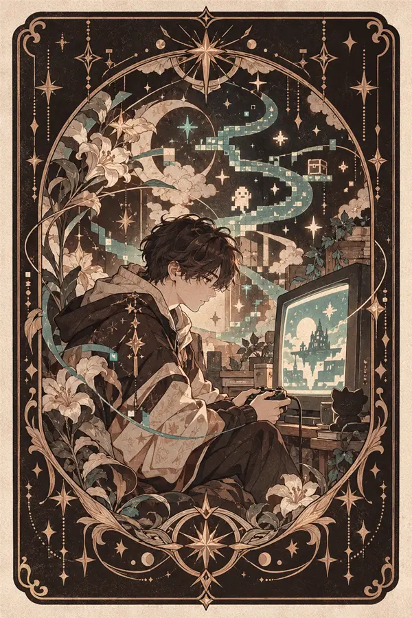
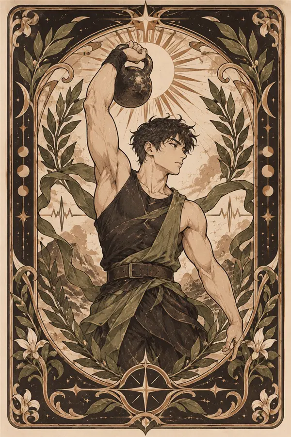
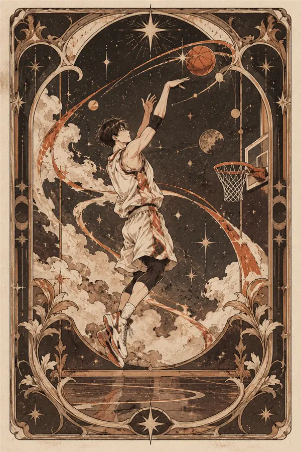
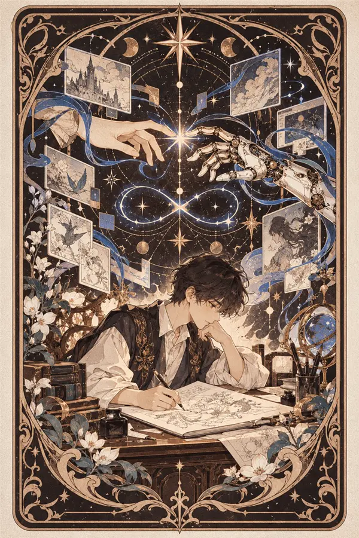
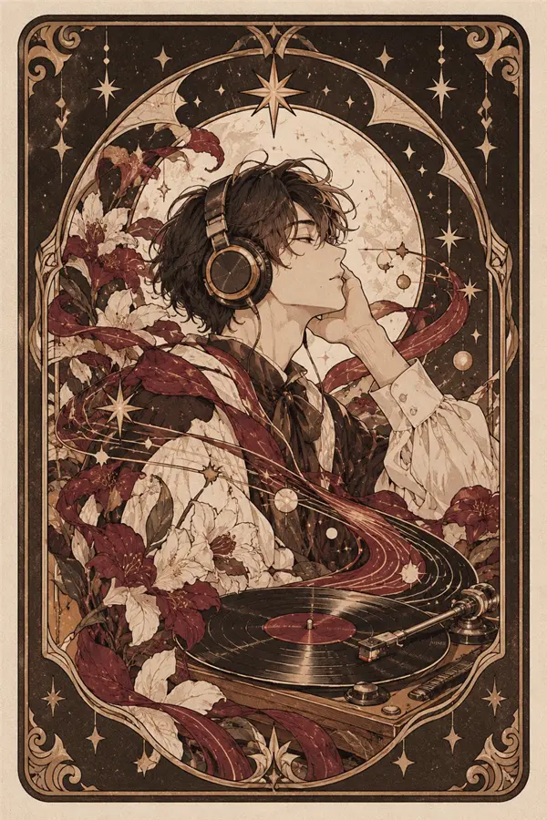

广州大学建筑设计研究院有限公司
岭南建筑所
- 参与桥头镇抽水站修缮项目
ABOUT ME · 关于我
01 EDUCATION · 教育经历
GUANGZHOU UNIVERSITY
02 EXPERIENCE · 工作经历
岭南建筑所
实习经历
03 HUMAN × AI
我更关注人与 AI 如何共同完成创造。人提出问题、判断方向，也为作品注入经验、情感与审美；AI 打开更多可能，跨越技术边界，并在一次次生成与尝试中带来意料之外的灵感。它们不是彼此替代的关系，而是一种持续协作：人建立目标、筛选与修正，AI 放大想象、加速试验。最终，设计仍然回到人的感受——既准确回应需求，也创造值得被记住的新体验。
人赋予意义，AI 拓展可能。
PORTFOLIO · 作品集
点击任意项目进入专属阅读器。桌面端左侧是项目介绍，右侧连续浏览；视频进入画面后会自动播放。
LIFE · 工作之外
五种兴趣组成的个人卡牌。点击方向按钮，或直接左右拖动浏览。

01GAMING
游戏
02FITNESS
健身
03BASKETBALL
篮球
04AIGC CREATION
AIGC 创作
05MUSIC
音乐DRAG TO EXPLORE · 左右滑动
MESSAGES · 留言板
拖动画布探索留言，滚轮或按钮可以缩放。这里的留言会公开显示给每一位访客。
谢谢你看到这里。这个网站会和作品一起，慢慢长出来。
可以聊作品、设计、AI，也可以只留下一句今天的感受。
如果你对作品中的流程或细节感兴趣，欢迎直接告诉我。
你贴出的留言，会立即出现在这面墙上。
拖动浏览滚轮 / 双指缩放双击回到总览